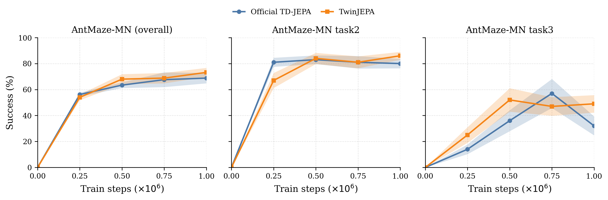
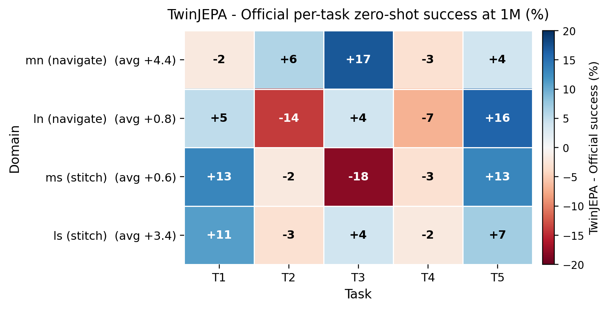
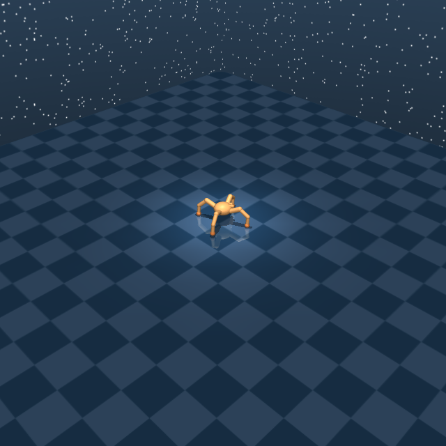
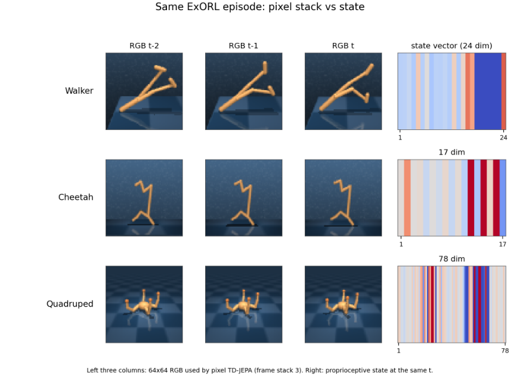

TD-JEPA trunk unchanged
Encoders, multi-step predictor, orthogonal regularizers, and FlowBC actor match Official TD-JEPA. Only the auxiliary switch is on.
arXiv:2610.02922 · The University of Hong Kong
Action-preferred predictive representations for goal-conditioned control. TwinJEPA keeps the TD-JEPA backbone and adds offline-mined reward-gap and preference supervision, with no extra cost at inference.
Goal-conditioned policies from offline data must decide among actions that look
similar in state space but lead to different futures. TwinJEPA keeps the official
TD-JEPA trunk and adds a temporal action-preference auxiliary: from counterfactual
pairs that share an anchor observation, two small heads predict the return gap
ΔV and the preferred action. The training objective is
L = LTD-JEPA + λ · (αgap Lgap + αpref Lpref)
with default λ = 0.1, αgap = 1,
αpref = 0.5.
The primary claim is OGBench AntMaze under a shared Fixed-HP budget
(ψortho = 0.1, lrψ = 10−4,
10 paired seeds, 1M steps). Additional checks cover ExORL Quadruped and Cheetah,
DMC Walker, D4RL Maze2D, and the same ExORL domains from 64×64 pixels.

Encoders, multi-step predictor, orthogonal regularizers, and FlowBC actor match Official TD-JEPA. Only the auxiliary switch is on.
Offline pairs share an anchor state and two actions. The preferred branch is the one with higher goal-conditioned value, exposing local action discrimination.
A gap head regresses ΔV and a preference head classifies the better action, so the latent keeps action-sensitive structure for goal reaching—not only one-step prediction.
TD-JEPA keeps trajectory points on a smooth manifold with temporal consistency, but nearby states that lead to different futures stay poorly separated. TwinJEPA adds pairwise action-preference supervision so the shared latent expands into action-relevant regions with different goal-conditioned outcomes.
Reading the animation. Watch the twin process unfold:
a counterfactual pair appears → action-diverse links are mined →
hgap / hpref score ΔV and preference →
the latent expands into Region A / B → futures diverge and local
discriminability rises (inference unchanged).

Same eval task, two live simulator clips: a failure on the left and a success on the right. Ordered by matched Fixed-HP lift in the paper (Quadruped +40.4 → Cheetah +33.7 → Walker +8.4 → Maze2D +5.2 → AntMaze mn +4.4). Maze domains use goal-reaching (distance ≤ 0.5). DMC / ExORL use low vs high stored task return. Clips are scored dataset trajectories replayed in MuJoCo / Gymnasium — not random rollouts.
Download videos for PowerPoint
Largest matched Fixed-HP lifts: Quadruped +40.4 (walk +72.1), Cheetah +33.7 (walk +70.7, run +56.7), Walker +8.4 on stand/run headroom, AntMaze mn +4.4 (hard T3 +17; λ=0.5 reaches 78.4). Maze2D Fixed-HP is a smaller boundary-case (+5.2 on reachable goals T3–T5). From pixels, Walker stand is the largest single-task lift (+103.2, 784 → 887).
Mean ± SE success (%). Official TD-JEPA on medium-navigate sits within SE of the published TD-JEPA number (68.8±4.0 vs 70.4±3.7). Paired seed wins: 5/10 (mn), 5/10 (ln), 6/10 (ms), 7/10 (ls).
| Domain | Official TD-JEPA | TwinJEPA | Δ |
|---|---|---|---|
| Medium-Navigate | 68.8±4.0 | 73.2±3.5 | +4.4 |
| Large-Stitch | 37.8±2.7 | 41.2±3.1 | +3.4 |
| Large-Navigate | 42.2±2.1 | 43.0±3.3 | +0.8 |
| Medium-Stitch | 51.4±3.7 | 52.0±4.3 | +0.6 |
| AntMaze-4 avg | 50.1 | 52.4 | +2.3 |


The advantage is selective amplification on harder goals, not a uniform lift. Medium-navigate: T3 +17, T2 +6, T5 +4, with small regressions on T1 (−2) and T4 (−3). Other standouts: ln-T5 +16, ms-T1/T5 +13, ls-T1 +11. A minority of cells regress (ms-T3 −18, ln-T2 −14). Domain averages stay non-negative.
| Domain | T1 | T2 | T3 | T4 | T5 | Avg | |
|---|---|---|---|---|---|---|---|
| mn | Official | 81 | 80 | 32 | 57 | 94 | 68.8 |
| TwinJEPA | 79 | 86 | 49 | 54 | 98 | 73.2 | |
| Δ | −2 | +6 | +17 | −3 | +4 | +4.4 | |
| ln | Official | 76 | 39 | 51 | 16 | 29 | 42.2 |
| TwinJEPA | 81 | 25 | 55 | 9 | 45 | 43.0 | |
| Δ | +5 | −14 | +4 | −7 | +16 | +0.8 | |
| ms | Official | 52 | 3 | 59 | 81 | 62 | 51.4 |
| TwinJEPA | 65 | 1 | 41 | 78 | 75 | 52.0 | |
| Δ | +13 | −2 | −18 | −3 | +13 | +0.6 | |
| ls | Official | 44 | 18 | 76 | 47 | 4 | 37.8 |
| TwinJEPA | 55 | 15 | 80 | 45 | 11 | 41.2 | |
| Δ | +11 | −3 | +4 | −2 | +7 | +3.4 |
Table 7: overall and easy Task 2 both hit 50% by 250k. Hard Task 3 is where Twin pulls ahead — 50% at 500k vs Official 750k, finishing +17.
| Setting | Steps to 50% (Off / Twin) | Official @1M | Twin @1M | Δ |
|---|---|---|---|---|
| overall (5-task) | 250k / 250k | 68.8 | 73.2 | +4.4 |
| task 3 (hard) | 750k / 500k | 32 | 49 | +17.0 |
| task 2 (easy) | 250k / 250k | 80 | 86 | +6.0 |
Largest return lift in the submitted appendix. Fixed-HP at 1M with
retuned τobs = 1.0, mean over stand/walk/run/jump:
559.4±35.4 → 599.8±28.2 (+40.4).
Positive on all five seeds. Walk +72.1,
stand +49.6, run +24.8, jump +15.2.
Merging five extra seeds stays positive (n=10: +20.4).
| Setting | Official | TwinJEPA | Δ |
|---|---|---|---|
| Quadruped (n=5, τ=1.0) | 559.4±35.4 | 599.8±28.2 | +40.4 |
| stand | 754.5±47.9 | 804.1±35.8 | +49.6 |
| walk | 462.7±77.1 | 534.8±53.1 | +72.1 |
| run | 384.4±23.0 | 409.2±19.1 | +24.8 |
| jump | 635.9±53.2 | 651.1±21.4 | +15.2 |
| n=10 merge (τ=1.0) | 558.9±28.4 | 579.4±29.1 | +20.4 |

Unlike Cheetah, neither head alone recovers the lift: gap-only 554.4 (−5.0) and pref-only 548.4 (−10.9) vs full Twin 599.8. Both auxiliaries are required here.
| Variant | Return @1M | Δ vs Official |
|---|---|---|
| Official | 559.4±35.4 | — |
| Full TwinJEPA (λ=0.1) | 599.8±28.2 | +40.4 |
| Gap only | 554.4±18.2 | −5.0 |
| Pref. only | 548.4±26.8 | −10.9 |
| λ=0.05 | 569.2±33.6 | +9.8 |
| Seed | Official | TwinJEPA | Δ |
|---|---|---|---|
| 3502 | 520.8 | 583.1 | +62.3 |
| 3917 | 612.4 | 634.3 | +21.9 |
| 4729 | 548.5 | 561.1 | +12.6 |
| 8948 | 574.5 | 608.4 | +33.8 |
| 9460 | 540.5 | 612.0 | +71.6 |
| mean | 559.4 | 599.8 | +40.4 |
Next-largest ExORL return lift. Fixed-HP task-mean at 1M: 638.0±44.2 → 671.7±24.3 (+33.7, 7/10 seeds). Gains concentrate on forward locomotion: walk +70.7, run +56.7; walk-backward is already saturated.
| Task | Official | TwinJEPA | Δ |
|---|---|---|---|
| Cheetah mean (n=10) | 638.0±44.2 | 671.7±24.3 | +33.7 |
| walk | 892.6±89.7 | 963.3±42.9 | +70.7 |
| run | 303.7±88.8 | 360.4±58.5 | +56.7 |
| run backward | 371.3±22.8 | 378.5±18.3 | +7.2 |
| walk backward | 984.3±0.9 | 984.5±0.6 | +0.1 |
| Variant (5 seeds) | Return @1M |
|---|---|
| Official | 610.5±44.0 |
| Twin (full) | 671.4±32.4 |
| Gap only | 654.5±34.5 |
| Pref. only | 629.8±37.2 |
| λ=0.05 | 634.8±52.7 |
| λ=0.5 | 629.5±41.7 |
Paper Fig. 9: gains sit on tasks with headroom (stand +20.6, run +18.3).
Walk and spin are already near ceiling, so they dilute the 4-task mean to
774.3 → 782.7 (+8.4). Across the six-cell grid the
largest lift is +12.6 at
(ψortho = 0.1, lrψ = 10−5);
the 30-pair aggregate is +5.8.
| ψortho | lrψ | Official | TwinJEPA | Δ |
|---|---|---|---|---|
| 0.01 | 10−4 | 779.1±8.6 | 779.6±8.4 | +0.5 |
| 0.01 | 10−5 | 766.2±16.7 | 763.7±9.0 | −2.5 |
| 0.1 | 10−4 | 774.3±10.6 | 782.7±4.7 | +8.4 |
| 0.1 | 10−5 | 754.9±9.8 | 767.5±7.2 | +12.6 |
| 1 | 10−4 | 771.9±8.9 | 776.4±6.0 | +4.5 |
| 1 | 10−5 | 746.8±15.0 | 757.6±15.3 | +10.8 |
| Overall (30 pairs) | 765.5±4.9 | 771.3±3.8 | +5.8 | |
Not the headline result. Shared Fixed-HP: 9.2±2.2 → 14.4±1.7 (+5.2) on already-reachable T3–T5; T1/T2 stay at zero. The 30-pair grid is nearly tied (+0.3), so Maze2D is a robustness check, not a uniform win.
| ψortho | lrψ | Official | TwinJEPA | Δ |
|---|---|---|---|---|
| 0.01 | 10−4 | 8.8±1.9 | 10.8±2.9 | +2.0 |
| 0.01 | 10−5 | 11.2±1.4 | 13.2±2.2 | +2.0 |
| 0.1 | 10−4 | 9.2±2.2 | 14.4±1.7 | +5.2 |
| 0.1 | 10−5 | 13.6±2.9 | 6.0±1.1 | −7.6 |
| 1 | 10−4 | 8.0±1.1 | 8.8±2.3 | +0.8 |
| 1 | 10−5 | 10.8±2.6 | 10.4±1.9 | −0.4 |
| Overall (30 pairs) | 10.3±0.9 | 10.6±0.9 | +0.3 | |
Same RND episodes, 64×64 RGB and a DrQ encoder (Fixed-HP, 2M steps). The strongest pixel lift is Walker stand: 784.0 → 887.2 (+103.2), which carries the domain mean 716.6±60.0 → 741.8±35.9 (+25.3). Quadruped is ahead on run, walk, and stand (domain +5.6). Cheetah’s full ten-seed comparison is −8.5; a fixed five-seed diagnostic, after excluding two high Official run seeds, is +4.3. Unweighted domain average: 685.5 → 693.0 (+7.5).

| Setting | Official | TwinJEPA | Δ |
|---|---|---|---|
| Walker (n=5) | 716.6±60.0 | 741.8±35.9 | +25.3 |
| Quadruped (n=5) | 645.0±24.6 | 650.7±29.0 | +5.6 |
| Cheetah (n=10) | 694.8±23.2 | 686.4±12.1 | −8.5 |
| Unweighted domain avg | 685.5 | 693.0 | +7.5 |
| Cheetah diagnostic (n=5) | 685.1±14.7 | 689.4±14.9 | +4.3 |
| Walker task | Official | TwinJEPA | Δ |
|---|---|---|---|
| stand | 784.0 | 887.2 | +103.2 |
| walk | 811.9 | 815.7 | +3.7 |
| spin | 976.9 | 978.1 | +1.2 |
| run | 293.4 | 286.4 | −7.1 |
| Quadruped task | Official | TwinJEPA | Δ |
|---|---|---|---|
| run | 453.8 | 472.3 | +18.5 |
| stand | 904.6 | 917.4 | +12.9 |
| walk | 461.6 | 470.7 | +9.1 |
| jump | 760.2 | 742.3 | −17.9 |
Same Fixed-HP / 10-seed protocol as the AntMaze main table. Full TwinJEPA is the default matched setting (λ=0.1, αgap=1, αpref=0.5), not the unique optimum of every variant. Both auxiliary terms help; the best mixture is domain-dependent.
All tested λ remain above Official (68.8±4.0). Default λ=0.1 reaches 73.2±3.5 (+4.4). λ=0.05 and λ=0.5 are higher still (77.2±2.0 and 78.4±2.5), so 0.1 is a stable main-protocol choice rather than the uniquely best scalar on this domain.
| Variant | Success (%) | Δ vs Official |
|---|---|---|
| Official TD-JEPA | 68.8±4.0 | — |
| TwinJEPA (λ=0.05) | 77.2±2.0 | +8.4 |
| TwinJEPA (λ=0.1, default) | 73.2±3.5 | +4.4 |
| TwinJEPA (λ=0.5) | 78.4±2.5 | +9.6 |
| Medium-Navigate components | ||
|---|---|---|
| Variant | Success | Δ |
| Official | 68.8±4.0 | — |
| Gap only | 74.0±3.0 | +5.2 |
| Pref. only | 77.0±2.9 | +8.2 |
| Full TwinJEPA | 73.2±3.5 | +4.4 |
| Medium-Stitch | ||
|---|---|---|
| Variant | Success | Δ |
| Official | 51.4±3.7 | — |
| Gap only | 57.4±2.4 | +6.0 |
| Pref. only | 50.2±3.4 | −1.2 |
| Full TwinJEPA | 52.0±4.3 | +0.6 |
Preference-only is strongest on medium-navigate; gap-only is strongest on medium-stitch. Default full TwinJEPA stays the shared matched setting across domains.
Feiran You and Hongyang Du, The University of Hong Kong. arXiv:2610.02922.
@misc{you2026twinjepa,
title = {TwinJEPA: Action-Preferred Predictive Representations for Goal-Conditioned Control},
author = {You, Feiran and Du, Hongyang},
year = {2026},
eprint = {2610.02922},
archivePrefix = {arXiv},
primaryClass = {eess.SY},
url = {https://arxiv.org/abs/2610.02922}
}